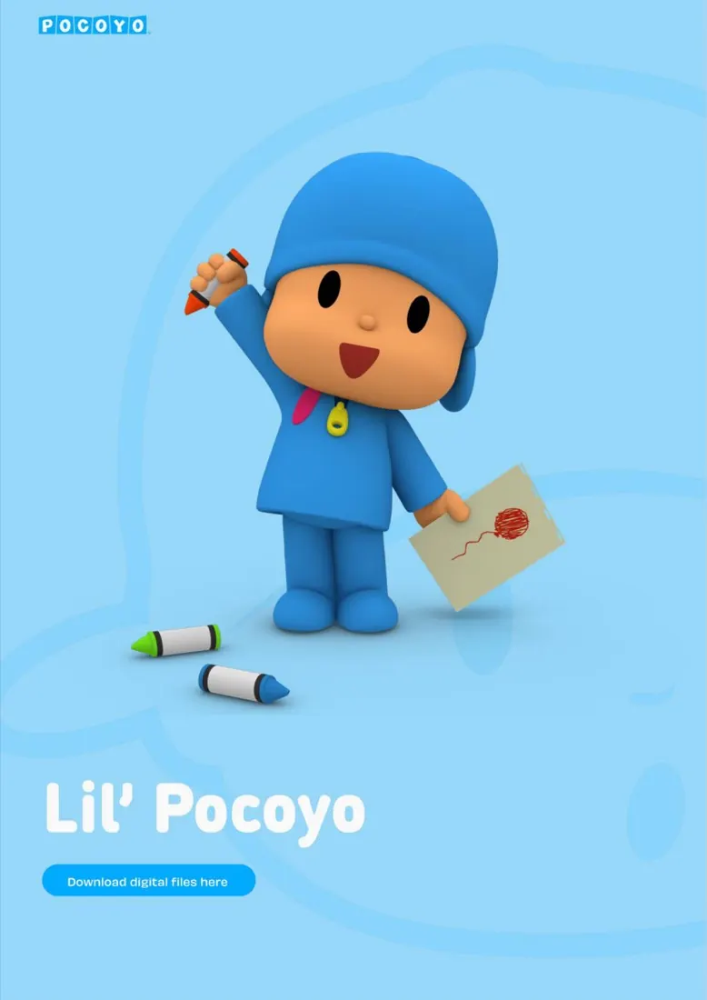
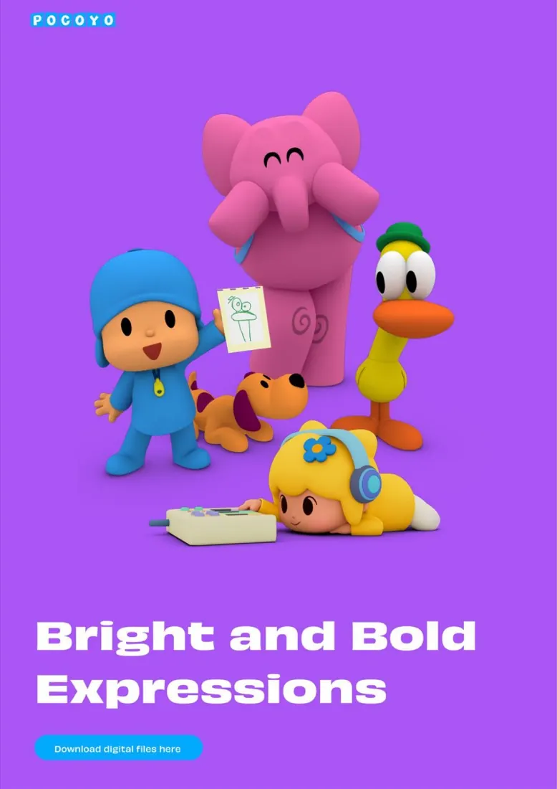
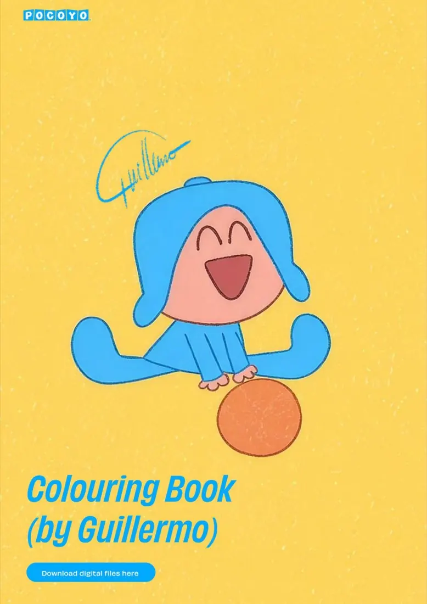

The brief
- Feel unmistakably 0–3.
- Speak to the parents who grew up with Pocoyo.
- Go far beyond clothes.
Three collections



Inside each one, newborn pieces stay simple and toddler pieces get louder, just like kids do. From there came the patterns and palettes, the packaging and swing tags. I art-directed every product shot and every photo in the guide.